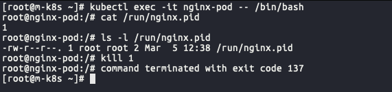
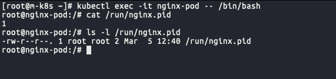

“컨테이너가 재시작된 이유”
배경
평범한 직장인의 오후, 쿠버네티스 도입을 위한 사내 스터디를 진행하던 중 누군가 던진 질문이 있었다. 파드의 컨테이너 자동 복구 방법에 대한 챕터였다.
“어떻게 파드는 컨테이너가 죽은걸 알았을까요? pid 1을 kill 했는데…”
스터디원들 모두 머리를 맞대어 고민해 보았지만 아무도 속시원한 정답을 찾지는 못한채로 끝이 나버린 질문. 예제를 요약하면 다음과 같다. (참고로 스터디를 진행한 도서명은 [컨테이너 인프라 환경 구축을 위한 쿠버네티스/도커] 이며 해당 포스팅의 예제는 책에서 제공한 예제를 참고하여 진행했다.)
- nginx 파드를 띄운다.
1
2
3
4
5
6
7
8
9# nginx-pod.yaml
apiVersion: v1
kind: Pod
metadata:
name: nginx-pod
spec:
containers:
- name: container-name
image: nginx - kubectl exec 명령어를 통해 해당 파드 컨테이너 셸에 접속한다.
1
[root@m-k8s 3.1.6]# kubectl exec -it nginx-pod -- /bin/bash
nginx 프로세서를 kill 한다 (kill 1)
잠시 후 컨테이너가 재시작 되어 다시 실행된 nginx 를 확인한다. (ls -l 명령어로 확인한 nginx.pid 생성 시간 변경)

위처럼 nginx 가 마법처럼 다시 실행되는 것을 확인할 수 있다. 이는 파드의 자동 복구 기술인 셀프 힐링(Self-Healing) 덕분으로 제대로 작동하지 않는 컨테이너를 다시 시작하거나 교체해 파드가 정상적으로 작동하게 한다.
그렇다면 질문을 구체화 해보자.
1, 누가 컨테이너를 재시작했을까?
2, 어떻게 파드 내의 컨테이너가 종료된걸 알았을까?
누가 컨테이너를 재시작했을까?
kubelet
컨테이너를 재시작한 범인은 바로 kubelet 이라는 노드 컴포넌트이다. 쿠버네티스를 공부하다보면 여러번 듣게되는 이름이므로 만약 듣지 못했다면 기억해두는 것이 좋다.
클러스터의 모든 머신에서 실행되며 Pod 및 컨테이너 시작, 헬스체크, 관리 등의 작업을 수행하는 구성 요소이다.
kubelet 은 다양한 메커니즘을 통해 제공된 파드 스펙(PodSpec)의 집합을 받아서 장애가 생기는 컨테이너가 있는지, 있다면 재시작을 하는 등 컨테이너가 실행된 후에도 주기적으로 컨테이너를 진단하며 파드 안 컨테이너들이 정상 작동하는지 모니터링 한다.
재시작 정책 (restartPolicy)
kubelet은 모니터링 중 파드 내 컨테이너가 종료되었다는 것을 알게되면 재시작 정책(restartPolicy)의 전략에 따라서 컨테이너를 재시작하게 된다.
- podSpec은 항상(Always), 실패 시(OnFailure), 절대 안 함(Never) 값으로 설정 가능한 restartPolicy 필드를 가짐
- 정의된 정책은 파드 내 모든 컨테이너에 적용되며 같은 노드에 있는 kubelet에 의한 컨테이너들의 재시작에만 관련
- Always : 종료 코드가 0 혹은 다른 코드이던지 상관 없이 컨테이너가 종료되면 kubelet은 항상 컨테이너 를 재시작 (default)
그렇다면 Never (재시작 시도를 하지 않음)로 설정한다면 컨테이너는 재시작될까? 안해봐도 느낌이 오지만 속는셈치고 해보자. 기존 yaml 을 복사해서 Never 재시작 정책을 설정한 yaml 을 생성해보자.
1 | # nginx-pod2.yaml |
1 | [root@m-k8s 3.1.6]# kubectl create -f ~/book/ch3/3.1.6/nginx-pod2.yaml |
재시작 정책을 Never 로 설정했기 때문에 어떤 종료코드로 종료되더라도 재시작 하지 않는다.
여기까지 확인해본 결과, kubelet이 파드 내 컨테이너의 종료를 알게되었고 그 후 재시작 정책의 Always (default) 전략에 따라서 컨테이너를 재시작 했다 는 것을 알수 있다.
파드 상태(status)
파드 상태(status)를 잠깐 짚고 넘어가보자. 파드 상태는 아래와 같은 상태값을 가지고 있다.
- Pending : 파드를 생성하는 요청이 API 서버에 의해 승인됐지만, 어떠한 이유로 인해 아직 실제로 생성되지 않은 상태
- Running : 파드에 포함된 컨테이너들이 모두 생성돼 파드가 정상적으로 실행된 상태
- Completed : 파드가 정상적으로 실행돼 종료됐음을 의미. 파드 컨테이너의 init 프로세스가 종료 코드로서 0을 반환한 경우에 해당
- Error : 파드가 정상적으로 실행되지 않은 상태로 종료됐음을 의미. 파드 컨테이너의 init 프로세스가 0이 아닌 종료 코드를 반환했을 때에 해당
- Terminating : 파드가 삭제 또는 퇴거(Eviction)되기 위해 삭제 상태에 머물러 있는 경우에 해당
컨테이너 내부의 프로세스가 종료될 때 종료 코드를 반환하는데, 컨테이너의 init 프로세스가 어떠한 값을 반환하느냐에 따라 파드의 상태가 결정 된다.
위의 예제에서는 kill 1 로 수동으로 신호를 발생시켰고, 컨테이너 프로세스가 종료되었음을 알수있다.
하나 의문인 것은 종료코드 137이 아니라 1으로 설정이 되었다는 것인데 추후 좀더 살펴봐야 겠다.
2
Exit Code: 0
추가로 status, retryPolicy, 컨테이너에서 프로브(probe)에 대해서 알고싶다면 아래 블로그들을 참고해보자. (끝도없이 나오는 쿠버네티스의 설정들에 감탄과 놀람을 느낄 수 있다.)
요약하자면 프로브는 컨테이너에서 kubelet에 의해 주기적으로 수행되는 진단으로 진단 수행을 위해서 쿠버네티스는 프로브라는 이벤트 리스너 생성 하고 kubelet은 컨테이너에 의해서 구현된 핸들러를 호출한다.
1 https://bcho.tistory.com/1264
2 https://velog.io/@you1367/K8s-%ED%8C%8C%EB%93%9CPod-%EC%82%AC%EC%9A%A9-3
3 https://kubernetes-docsy-staging.netlify.app/ko/docs/concepts/workloads/pods/pod-lifecycle/
항상 활성 프로브(livenessProbe)를 사용해야 할까?
만약 컨테이너 속 프로세스가 어떠한 이슈에 직면하거나 건강하지 못한 상태(unhealthy)가 되는 등 프로세스 자체의 문제로 중단될 수 있더라도, 활성 프로브가 반드시 필요한 것은 아니다.
그 경우 kubelet이 파드의 restartPolicy에 따라서 올바른 대처를 자동적으로 수행할 것이다.
여기서 한가지 의심든다.
kubelet이 재시작 정책에 의해서 컨테이너를 재시작하려면 컨테이너가 재시작 정책의 대상이 되어야 한다. 즉, kubelet은 컨테이너가 죽었다는걸 알아챘다는 소리인데 이것은 어떻게 가능할까? 우리는 probe를 별도로 정의하지 않았고 그렇다면 기본 상태는 Success 이다.
이제 ‘어떻게’ 의 차례다.
어떻게 파드 내의 컨테이너가 종료된걸 알았을까?
‘어떻게’를 살펴보기 전에 pid 1에 대한 의미부터 확인해보자.
pid 1의 의미
분명히 실행한 명령어는 pid 1을 kill 하라는 것이였다. pid 1의 의미를 찾으려면 리눅스 운영체제 까지 거슬러 올라간다.
리눅스 운영체제의 pid 1 은 커널이 할당하는 첫 번째 pid 라는 의미를 가지는 특수 pid 이다. 일반적으로 init, systemd에 pid 1이 할당되며 시스템 구동에 필요한 프로세스들을 띄우는 중요한 역할을 한다.
컨테이너의 경우 이미 구동된 시스템, 즉 커널위에서 동작하기 때문에 운영 체제 시스템을 구동시킬 필요가 없이 시스템에 예약된 pid 1번이 할당되지 않은 상태로 최초 실행자에게 할당 가능하게 된다.
즉, 컨테이너 내부의 pid 1은 컨테이너가 실행하는 처음 애플리케이션에게 할당되게 되는 것이다. 그리고 그 애플리케이션이 init 프로세스가 된다.
컨테이너와 단일 프로세스
컨테이너가 기본적으로 단일 프로세스만을 실행하도록 만드는 것이 권장하는 이유도 여기에 있다. 컨테이너에서 격리된 pid namespace에서 최초로 실행된 pid 1의 프로세스와 함께 컨테이너의 수명이 결정되기 때문이다.
컨테이너 내부에서 여러 개의 다른 역할을 하는 프로세스 들이 실행되면, 컨테이너의 상태와 실행 중인 애플리케이션들의 상태가 일치하지 않으므로, 컨테이너가 실행 중이더라도 내부의 모든 애플레케이션들이 정상적으로 실행되고 있는 상태인지 보장할 수 없게 된다.
다시 말해 컨테이너는 단일 프로세스를 실행하는 방식으로 설계되었고, 컨테이너 내부에서 실행되는 첫 번째 프로세스의 pid는 1 이라고 볼수 있다.
앞서 컨테이너의 init 프로세스가 어떠한 값을 반환하느냐에 따라 pod의 상태가 결정된다는 이야기를 한적이 있다. 이만큼 init 프로세스는 pod에 있어 중요하다.
init 프로세스가 그렇게 중요하다면 namespace 동작 중에 init 프로세스가 종료되면 어떻게 될까?
만약 pid namespace 내의 init 프로세스가 종료된다면, 커널은 SIGKILL 시그널을 통해 해당 namespace 내에 모든 프로세스를 종료시키게 된다.
이 의미는 pid namespace가 정상적으로 동작하기 위해선 pid 1의 init process가 필수적이란 의미이다.
그래서 어떻게?
컨테이너 최초로 실행된 프로세스가 init 프로세스가 되고 그 프로세스를 종료하면 하위 프로세스가 모두 종료되면서 결국 컨테이너가 종료된다.
결론
생각해보면 간단한 물음 하나에서 출발해 ‘누가’와 ‘어떻게’ 를 거쳐 컨테이너가 재시작 되었는지 알게되었다. 사실 공부를 진행하면 할수록 꼬리 질문이 끝도 없이 물고 이어졌고, 깊게 들어가면 한도없을 것을 알기에 중간에 발을 뺀 부분도 몇군데 있었다. 주말은 한정적이므로 남겨진 질문들은 내일의 나에게 넘기고 이 포스팅이 쿠버네티스를 공부하는 분들에게 조금이나마 도움이 되었으면 하는 바람이다.
(추신을 덧붙이자면 쿠알못이기 때문에 혹시나 틀린 부분이나 질문이 있으시다면 언제든지 댓글 환영합니다.)
출처
1 https://medium.com/finda-tech/kubernetes-pod%EC%9D%98-%EC%A7%84%EB%8B%A8%EC%9D%84-%EB%8B%B4%EB%8B%B9%ED%95%98%EB%8A%94-%EC%84%9C%EB%B9%84%EC%8A%A4-probe-7872cec9e568
2 https://junior-developer.tistory.com/67
3 https://kubernetes.io/ko/docs/concepts/workloads/pods/pod-lifecycle/
4 https://engineering.linecorp.com/ko/blog/prometheus-container-kubernetes-cluster/
5 https://zunoxi.tistory.com/92
6 https://bcho.tistory.com/1264
7 https://gaurav-kaushikgk88.medium.com/self-healing-pods-in-kubernetes-their-restart-policies-84d929778e6d
8 https://velog.io/@jayoh/%EC%BF%A0%EB%B2%84%EB%84%A4%ED%8B%B0%EC%8A%A4-%ED%8C%A8%ED%84%B4-4%EC%9E%A5-%EC%A0%95%EC%83%81%EC%83%81%ED%83%9C-%EC%A0%90%EA%B2%80
참고도서
컨테이너 인프라 환경 구축을 위한 쿠버네티스/도커 http://www.yes24.com/Product/Goods/102099414